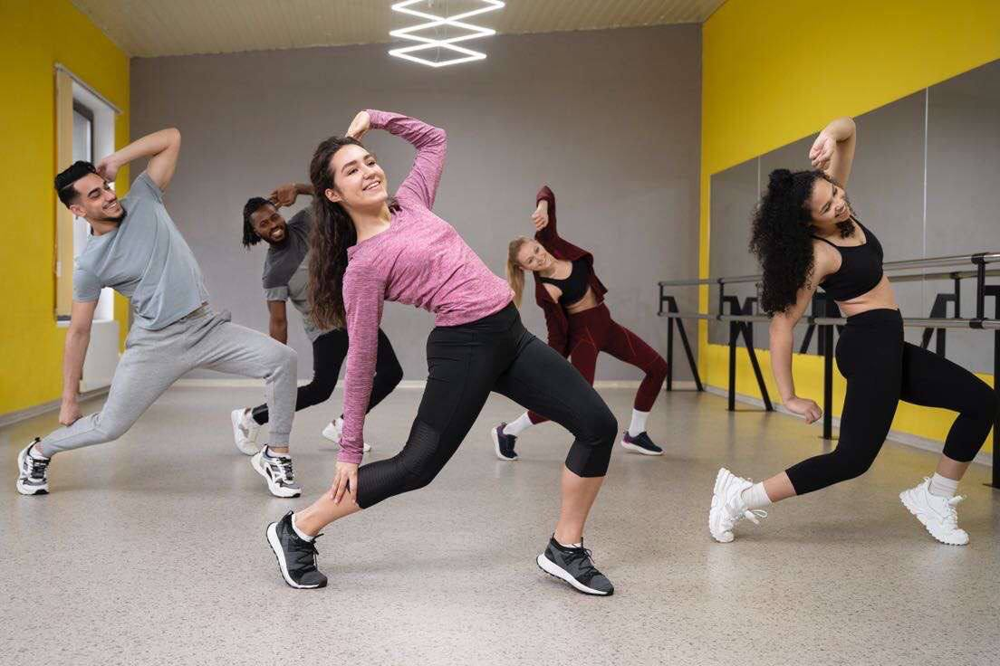

About Us

Information About Our Dancers
At The Ground Up Dance Studio, we are more than a dance studio – we are a community that thrives on rhythm,
expression, and creativity. With a commitment to fostering a love for dance, our experienced instructors bring
expertise and enthusiasm to every class. Whether you're here to refine your technique, explore new styles,
or simply enjoy the joy of movement, our welcoming and inclusive environment is the perfect stage for your dance journey.
Join us at The Ground Up Dance Studio and experience the magic of dance in a space where passion takes center stage.

Meet the heart and soul behind The Ground Up Dance Studio. Our dedicated team of passionate dance instructors
is committed to guiding you through an inspiring and transformative dance experience.
With diverse expertise and infectious energy, they are here to nurture your love for dance
and help you reach your fullest potential. Get ready to dance with the best!"
- Richard: Hip-hop choreographer
- Michale Hacke: Salsa choreographer
- Jennifer Miller: Contemporary choreographer
- Gardner: Ballet choreographer
- Carly Jackson: Jazz choreographer